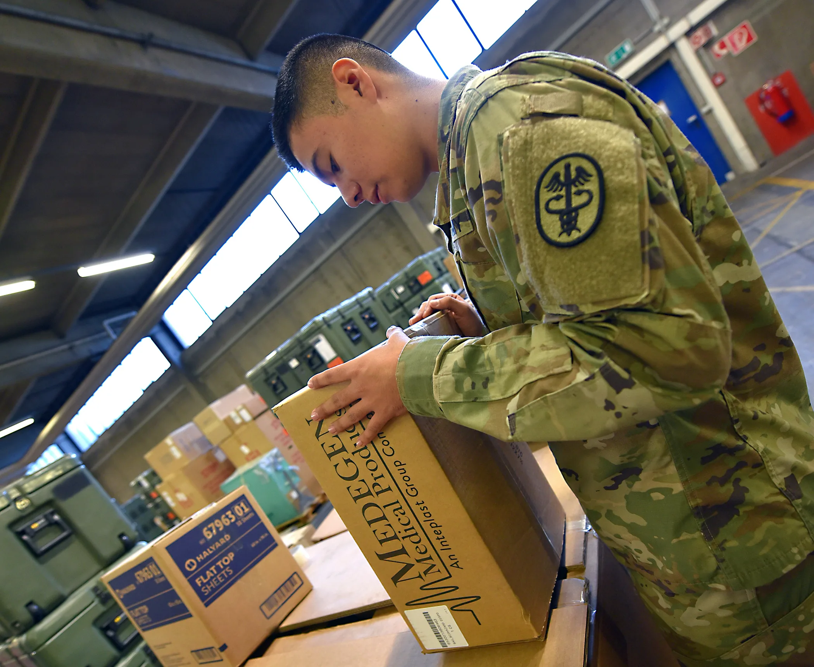

Learn what to consider before ordering Medicain 2% for clinics. This guide covers key takeaways, buyer scenarios, and essential logistics.
Ordering Medicain 2% for clinics can be a complex process, especially when navigating the landscape of wholesale suppliers. As a professional buyer, ensuring that you source the right product with the right specifications is critical. The stakes are high; the quality of numbing supplies can significantly impact patient satisfaction and clinic operations.
Understanding what to check before placing your order is essential for making informed decisions. This guide will provide you with practical insights to streamline your procurement process and ensure that you meet your clinic's needs effectively.
Key Takeaways
- Always verify the supplier's reputation and reliability before making a purchase.
- Understand the product specifications and packaging options available for Medicain 2%.
- Evaluate shipping and handling practices to ensure timely delivery.
- Be aware of minimum order quantities (MOQ) and plan your reorder strategy accordingly.
- Prepare a comprehensive checklist to streamline your quote requests.
What this guide covers
- Understanding Medicain 2%
- Buyer scenarios and needs
- Comparing supplier options
- Checklist for requesting quotes
- Logistics and documentation
- MOQ and reorder planning
- Frequently asked questions
What buyers should understand first

Medicain 2% is a local anesthetic commonly used in clinics to provide effective numbing during various procedures. It is essential for clinics, spas, resellers, and distributors to understand the product's characteristics, including its formulation, packaging, and intended use. While this guide does not delve into treatment instructions, it is crucial for buyers to recognize that the quality and reliability of Medicain 2% can significantly influence patient experiences and outcomes.
When procuring Medicain 2%, buyers should also consider the regulatory environment surrounding its use. Understanding local regulations regarding the storage and handling of anesthetics can help ensure compliance and safety in your clinic. Additionally, knowing the difference between various formulations and concentrations can aid in selecting the most appropriate product for your specific needs.
Which buyers is this most relevant for?
This guide is particularly relevant for professional buyers in clinics and spas who need to maintain an adequate supply of numbing agents. Resellers and distributors looking to stock Medicain 2% for their clients will also find this information useful. Different business types may have varying order planning needs; for instance, a high-volume clinic may require regular shipments, while a smaller spa might focus on smaller, more infrequent orders. Understanding these scenarios can help buyers make informed decisions based on their specific operational requirements.
For example, a dental clinic may prioritize quick access to Medicain 2% due to the nature of their procedures, while a cosmetic spa may plan for bulk purchases to accommodate seasonal demand. Recognizing these differences will guide buyers in determining the most effective procurement strategy.
How to compare options before ordering
When considering Medicain 2% from various wholesale suppliers, it is essential to compare several key criteria:
- Product Type: Ensure you are sourcing the correct formulation and concentration. Different applications may require specific types of anesthetics.
- Brand: Some brands may have a reputation for higher quality or efficacy. Researching brand history and user reviews can provide valuable insights.
- Packaging: Look for options that suit your storage capabilities and usage needs. Consider whether you need single-use vials or larger multi-dose containers.
- Batch/Expiry Visibility: Confirm that suppliers provide clear information on batch numbers and expiration dates. This is crucial for maintaining product integrity.
- Supplier Communication: Assess how responsive and transparent the supplier is regarding inquiries and support. Good communication can prevent misunderstandings and delays.
- Destination Requirements: Understand any specific shipping requirements based on your location. Some regions may have stricter regulations regarding the transport of medical supplies.
Buyer checklist before requesting a quote

- Confirm the product specifications for Medicain 2%.
- Verify the supplier’s credentials and reputation.
- Determine your required quantity and any variants needed.
- Check for packaging options that meet your clinic’s needs.
- Inquire about batch tracking and expiration information.
- Clarify shipping costs and timelines.
- Prepare to discuss minimum order quantities (MOQ) with the supplier.
- Assess the supplier’s return policy and warranty options.
- Ensure you have the necessary documentation for compliance with local regulations.
Shipping, packing and documentation questions
Logistics play a crucial role in the procurement process. When ordering Medicain 2%, consider the following questions:
- What are the shipping options available, and how do they affect delivery times?
- What packing methods does the supplier use to ensure product integrity during transit?
- What documentation is required for shipping, and how will it be provided?
- Are there any specific customs requirements for importing Medicain 2% into your region?
- How does the supplier handle potential delays or issues during shipping?
- What insurance options are available for high-value shipments?
MOQ, quotation and reorder planning
Understanding minimum order quantities (MOQ) is essential for effective procurement. Different suppliers may have varying MOQs, which can impact your buying strategy. To prepare for your order:
- Determine the quantities of Medicain 2% you will need based on your clinic's usage patterns.
- Consider any product variants that may be necessary for different procedures.
- Provide detailed destination information to the supplier to ensure accurate shipping quotes.
- Contact SOLA to confirm current availability and request a wholesale quotation tailored to your needs.
- Plan for seasonal fluctuations in demand by adjusting your reorder quantities accordingly.
FAQ
What is Medicain 2% used for?
Medicain 2% is primarily used as a local anesthetic in various clinical procedures to provide effective numbing.
How do I choose a reliable wholesale supplier?
Look for suppliers with positive reviews, clear communication, and a solid track record in the industry.
What should I consider when planning my reorder strategy?
Evaluate your usage rates, storage capacity, and the supplier's MOQ to ensure you maintain an adequate supply.
Are there specific shipping requirements for Medicain 2%?
Yes, ensure you understand any customs regulations and shipping conditions that apply to your location.
How can I get a quote for Medicain 2%?
Contact SOLA for wholesale quotation via WhatsApp to discuss your specific needs and requirements.
Planning a wholesale request?
Send product names, quantities and destination for a tailored discussion.
Contact SOLA on WhatsApp →General educational content for professional buyers. Not medical, legal, regulatory or import advice.
Image sources: Stocking supplies (6085537).jpg by U.S. Army AMLC by Ellen Crown (Public domain, 2100x1724 px); Balikatan 25- U S , Philippine forces construct multi-purpose warehouse, prepare medical supplies to local community (8962080).jpg by U.S. Marine Corps photo by Lance Cpl. Roger Annoh (Public domain, 7177x4787 px).